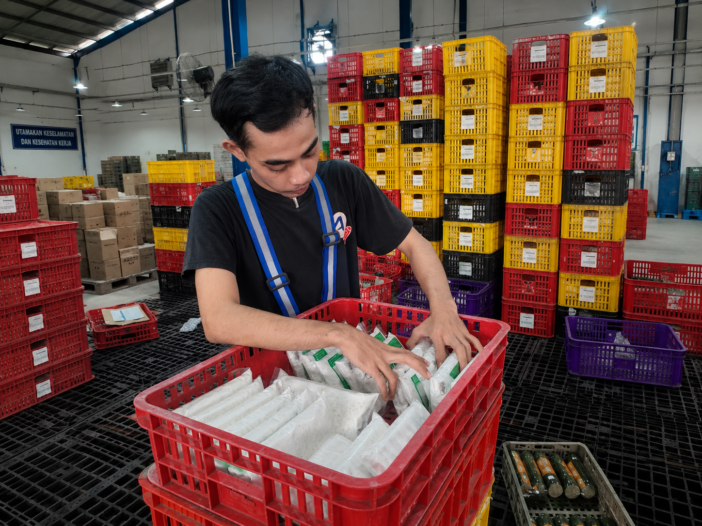
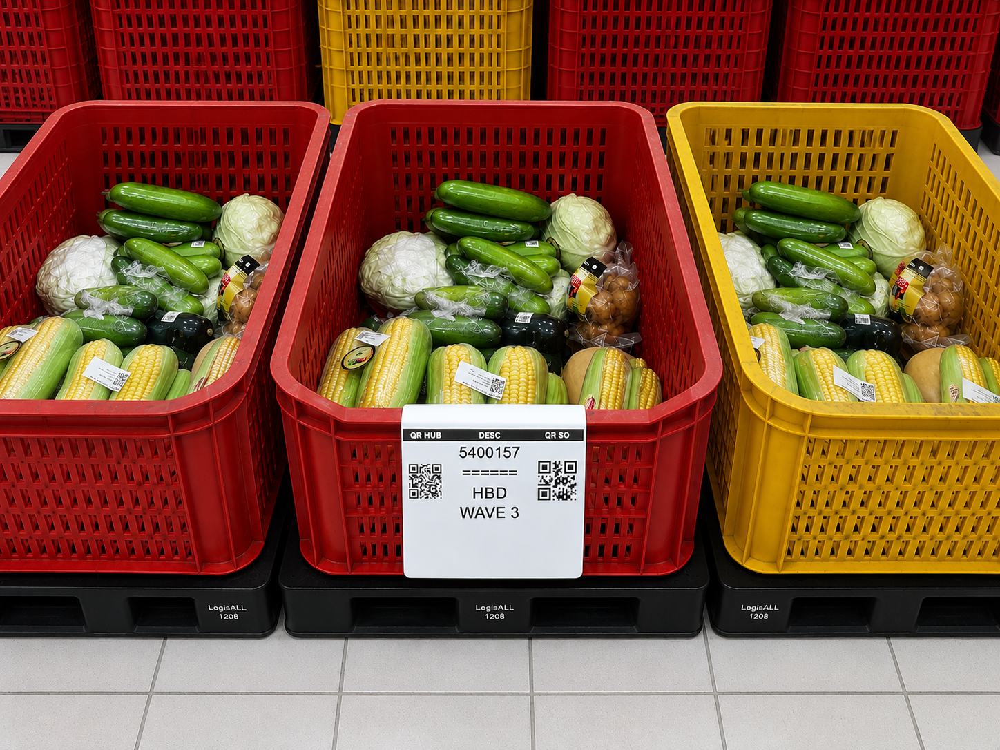
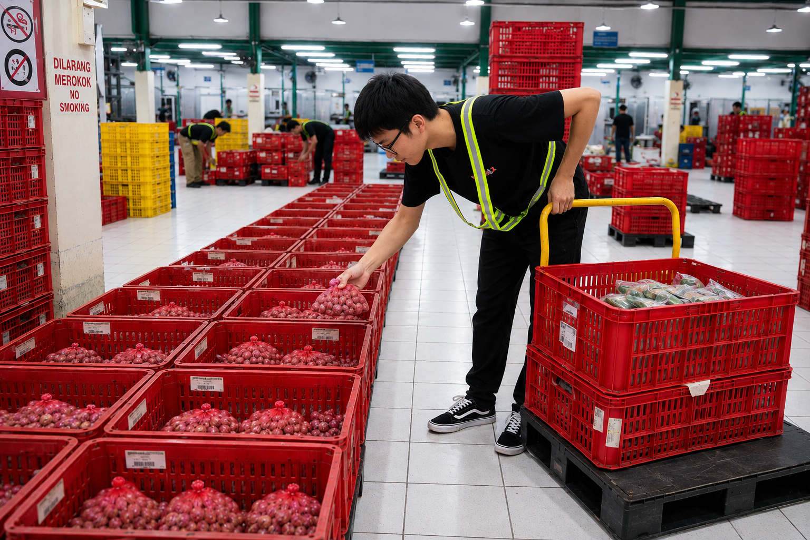

Panduan Umum
Selamat datang di Portal Panduan Kerja Mitra Warehouse Fresh. Halaman ini dirancang sebagai acuan cepat dan praktis bagi seluruh mitra di lapangan untuk memahami setiap tahapan kerja secara terstruktur, mulai dari proses penerimaan barang (inbound), pengelolaan stok (inventory), hingga persiapan pengiriman (outbound). Silakan gunakan menu navigasi di samping kiri untuk mencari modul spesifik sesuai dengan peran Anda, serta pastikan untuk selalu mengikuti urutan instruksi dan standar kualitas yang berlaku demi menjaga kelancaran operasional gudang kita.
Inbound Admin
Fokus pada penerimaan dokumen, pengecekan kualitas barang, pencatatan hasil aktual, serta input data ke sistem WMS.
Aturan Singkat di Lapangan
Ikuti urutan proses
Mulai dari dokumen, pengecekan fisik, pencatatan, lalu input sistem.
Catat hasil aktual
Memastikan jumlah penerimaan di sistem sesuai dengan penerimaan di lembar kerja HO.
Laporkan kendala
Mengarsip dokumen penerimaan dan pencetakan label.
Tugas Admin Inbound secara umum
Secara umum, Admin Inbound bertanggung jawab memastikan seluruh proses penerimaan barang terdokumentasi dengan benar, akurat, dan sesuai SOP.
Vendor melakukan registrasi
Vendor melakukan registrasi ketika tiba di warehouse, kemudian dari tim LP/security merubah status PO dari "On Delivery" menjadi "Arrived".
(Klik untuk lihat contoh gambar)
Pengecekan kelengkapan dokumen dan mempersiapkan lembar kerja HO untuk checker
Pastikan No.PO dengan surat jalan sesuai, kemudian gabungkan dengan lembar kerja HO menjadi satu bagian dan diberikan kepada checker.
(Klik untuk lihat contoh gambar)


Proses pengesahan dokumen penerimaan (GRN)
Pastikan jumlah penerimaan pada sistem sesuai dengan penerimaan aktual. Berikut ini langkah proses GRN (Good Receipt Notes) pada sistem WMS oleh Admin Inbound.
(Klik untuk lihat contoh gambar)


Proses Pencetakan Label barcode
Admin melakukan persiapan dan pencetakan label barcode, memastikan tanggal expired date sesuai dengan ketentuan produk, memastikan SKU Name sesuai dengan produknya .
(Klik untuk lihat contoh gambar)

Inbound Checker
Melakukan perhitungan fisik aktual dan pencatatan pada sistem.
Aturan Singkat di Lapangan
Ikuti urutan proses
Mulai dari dokumen, pengecekan fisik, pencatatan, lalu input sistem.
Catat hasil aktual
Jumlah barang, kondisi barang, dan selisih harus ditulis sesuai temuan.
Laporkan kendala
Jika ada dokumen tidak lengkap, QR tidak terbaca, atau barang rusak, segera eskalasi ke PIC.
Persiapan Aset
Menyiapkan aset yang digunakan seperti keranjang, pallet, seuic, partisi untuk melapisi keranjang
(Klik untuk lihat contoh gambar)
Proses penerimaan
Sebelum dilakukan proses penerimaan oleh Checker Inbound, dilakukan pengecekan suhu mobil dan produk oleh tim QA Inbound
(Klik untuk lihat contoh gambar)
Proses Menghitung oleh Checker Inbound
Checker menghitung jumlah barang yang diterima dengan mengecek kualitas secara visual
(Klik untuk lihat contoh gambar)
Pencatatan pada lembar kerja HO (Hand Over)
Mencatat jumlah produk yang diterima, beri keterangan jika jumlah produk tidak sesuai dengan jumlah pada PO(Purchase Order)
(Klik untuk lihat contoh gambar)
Proses validasi dengan Team Leader
Team Leader melakukan validasi singkat dengan memastikan jumlah produk di setiap keranjangnya
(Klik untuk lihat contoh gambar)
Proses penerimaan pada sistem WMS
Melakukan penerimaan pada sistem sesuai dengan jumlah produk yang diterima, menggunakan alat scanner seuic
(Klik untuk lihat contoh gambar)
Inbound Labeling
Proses penempelan label pada produk tertentu sebelum diletakkan di rak.
Proses pencetakan label
Admin mencetak label produk yang akan ditempel
(Klik untuk lihat contoh gambar)
Proses penempelan label
Tim labeling melakukan proses penempelan barcode pada produk. Perhatikan detail SKU pada label dan posisi penempelan label. Untuk produk dengan kemasan bergambar seperti roti, telur, tahu, dan tempe, posisi label menempel pada barcode batang bawaan kemasan. Jangan menempel pada bagian nama merk atau menutupi bagian komposisi produk.
(Klik untuk lihat contoh gambar)


Inventory Admin
Fokus pada akurasi SLOC, kontrol stock opname, dan pengawasan kualitas produk.
Aturan Singkat di Lapangan
Ikuti urutan proses
Mulai dari dokumen, pengecekan fisik, pencatatan, lalu input sistem.
Catat hasil aktual
Jumlah barang, kondisi barang, dan selisih harus ditulis sesuai temuan.
Laporkan kendala
Jika ada dokumen tidak lengkap, QR tidak terbaca, atau barang rusak, segera eskalasi ke PIC.
Tugas Inventory Admin secara umum
Secara umum, Inventory Admin bertanggung jawab memastikan seluruh proses pemindahan, penyesuaian, dan pencatatan stok di sistem berjalan akurat sesuai kondisi fisik real-time di area racking/shelving.
Proses kerja operasional
Melakukan monitoring penyesuaian data stock (cycle count) secara rutin, validasi stock bermasalah, serta pengolahan administrasi internal.
(Klik untuk lihat contoh gambar)
Inventory Badstock Admin
Proses pencatatan barang rusak, busuk, cacat (badstock) serta pembuatan berkas Berita Acara pemusnahan/retur.
Proses Input sistem
Memasukkan data barang rusak atau tidak layak konsumsi ke sistem WMS untuk memisahkan stok badstock dari stock good (ready-to-sell).
(Klik untuk lihat contoh gambar)
Proses Pembuatan BA (Berita Acara)
Menyiapkan lembaran berkas Berita Acara (BA) resmi untuk ditandatangani oleh Supervisor (SPV) dan tim QC sebagai berkas fisik pemusnahan barang.
(Klik untuk lihat contoh gambar)
Inventory Putaway
Proses penempatan barang yang baru datang ke lokasi penyimpanan (shelving/racking) yang sesuai.
Proses perhitungan ulang dan peletakkan barang
Pastikan menghitung kembali secara fisik jumlah barang, kemudian lakukan scan lokasi penempatan menggunakan Scanner seuic agar data rack akurat.
(Klik untuk lihat contoh gambar)
Inventory Stock Keeper
Proses monitoring harian stok, rotasi produk (FIFO/FEFO), dan penataan kebersihan area rack penyimpanan.
Proses membantu penugasan picker
Membantu mengarahkan tim picker jika terdapat kendala letak barang atau selisih antara sistem dengan ketersediaan fisik di rak.
(Klik untuk lihat contoh gambar)
Proses perpindahan barang (Replenishment)
Memindahkan stok massal dari area penampungan atas ke rak pemetik bawah agar proses pick berjalan mulus.
(Klik untuk lihat contoh gambar)
Inventory Badstock
Proses sortir fisik dan pengumpulan barang reject di area khusus.
Pemilahan & Penandaan Badstock
Pastikan setiap item dipisahkan berdasarkan kategorinya (rusak, busuk, kemasan cacat) dan diletakkan di tempat penampungan sementara sebelum proses administrasi.
Outbound Picker Sorter
Melakukan pengambilan barang di rak penyimpanan dan memilahnya berdasarkan rute/hub pengiriman.
Persiapan Asset
Asset yang digunakan oleh Picker Sorter.
(Klik untuk lihat contoh gambar)
Penugasan Picker
Team Leader memberikan penugasan pengambilan barang ke Picker.
(Klik untuk lihat contoh gambar)
Pengambilan Barang (Picking)
Gunakan scanner seuic untuk membaca tugas picking list, ambil barang sesuai panduan lokasi rack serta perhatikan prinsip FEFO (First-Expired, First-Out).
(Klik untuk lihat contoh gambar)

Penugasan sorter pada sistem
Team Leader melakukan penugasan untuk barang kategori cross dock kepada Picker Sorter.
(Klik untuk lihat contoh gambar)
Proses Sortir Sesuai Rute (Sorting)
Menyiapkan keranjang sebanyak HUB tujuan, menempelkan label barcode HUB tujuan pada keranjang, kemudian mengisi setiap keranjang dengan jumlah barang sesuai SO(Supply Order).
(Klik untuk lihat contoh gambar)

Outbound Checker
Proses verifikasi akhir produk yang telah dipick sebelum dimasukkan ke dalam armada kirim.
Verifikasi Kualitas & Jumlah
Lakukan verifikasi ulang fisik produk. Pastikan jumlah item sama persis dengan sales order (SO) dan kualitas produk fresh tetap terjaga (tidak layu, tidak pecah, kemasan utuh).
Pencetakan Surat Jalan (SJ)
Setelah lolos verifikasi, konfirmasi status di sistem outbound untuk mencetak lembar Surat Jalan resmi dan dokumen penunjang pengiriman lainnya.
Outbound Loader
Proses pemuatan barang ke dalam armada mobil pengiriman.
Loading Tata Letak Efisien
Susun barang di dalam mobil dengan metode First-In Last-Out (FILO) berdasarkan urutan rute kirim terdekat. Pastikan barang yang dikirim terakhir diletakkan di bagian dalam mobil.
Pengecekan Akhir Suhu Mobil
Pastikan suhu chiller/freezer mobil pengiriman telah diaktifkan dan suhunya sesuai standar kelayakan pengiriman produk fresh sebelum pintu armada disegel.